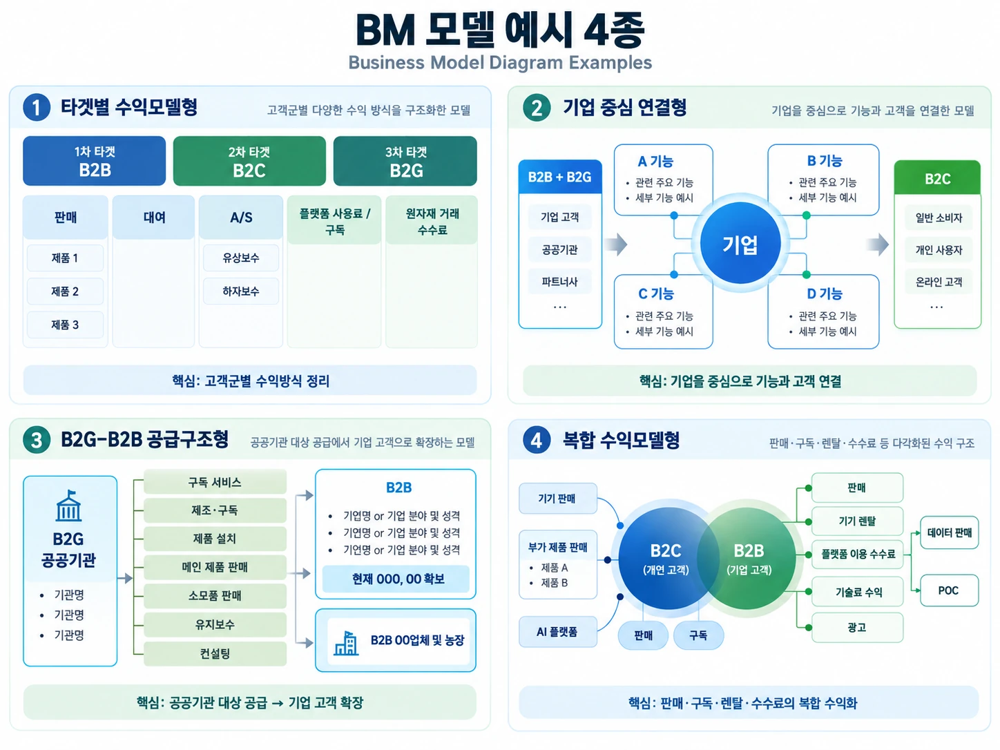
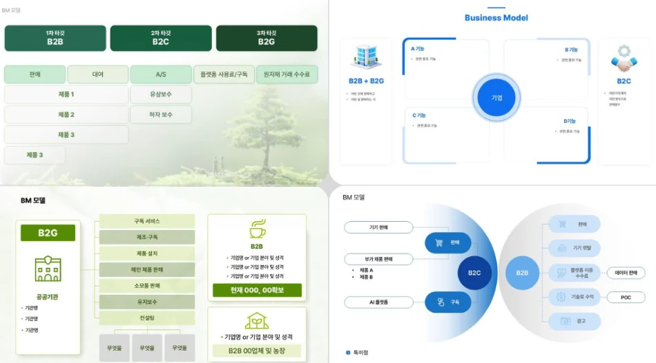

구조화 그림
구조화된 그림
원본의 4개 BM 표현 방식을 한눈에 비교할 수 있도록 2×2 인포그래픽으로 구조화했습니다.

① 타겟별 수익모델형 · ② 기업 중심 연결형 · ③ B2G–B2B 공급구조형 · ④ 복합 수익모델형
구조화 그림 → 4가지 분류 → 원본 이미지 → 해석과 적용 → 정리 OCR → 바로 쓰는 프레임 → 상세 해설


원본은 BM(Business Model)을 네 가지 방식으로 그린 예시 한 장입니다. 아래 표는 네 칸이 각각 무엇을 어떤 식으로 보여 주는지를 자리별로 갈라 놓은 것입니다.
| 위치 | BM 구조 | 이미지 내 핵심 내용 | 표현의 특징 |
|---|---|---|---|
| 좌상단 | 타겟별 수익모델형 | 1차 타겟 B2B / 2차 타겟 B2C / 3차 타겟 B2G | 고객군과 수익원을 표 형태로 연결 |
| 우상단 | 기업 중심 이해관계자형 | B2B + B2G ↔ 기업 ↔ B2C, A기능·B기능·C기능·D기능 | 기업을 중심으로 양쪽 고객군과 제공 기능을 표현 |
| 좌하단 | B2G–B2B 거래구조형 | B2G 공공기관 → 서비스·제품 → B2B 기업 | 누구에게 어떤 상품·서비스를 공급하는지 구체적으로 표현 |
| 우하단 | 복합 수익모델형 | B2C 판매·구독 / B2B 판매·렌탈·수수료·기술료·광고·데이터 판매·POC | 하나의 사업에서 여러 수익원을 동시에 표현 |
BM 모델
1차 타겟 B2B / 2차 타겟 B2C / 3차 타겟 B2G
수익 방식
핵심 포인트: 고객(Target)을 먼저 나누고 → 각 고객에게서 어떤 방식으로 수익을 얻는지 보여주는 BM
왼쪽: B2B + B2G
가운데: 기업
기업을 중심으로 A 기능, B 기능, C 기능, D 기능을 배치
오른쪽: B2C
핵심 포인트: 기업이 어떤 기능 또는 가치를 제공하여 B2B·B2G와 B2C를 동시에 연결하는가를 보여주는 형태
B2G 공공기관 → 구독 서비스 / 제조·구독 / 제품 설치 / 메인 제품 판매 / 소모품 판매 / 유지보수 / 컨설팅 → B2B
현재 000,00 확보 / B2B 00업체 및 농장
핵심 포인트: 누구에게 → 무엇을 제공하고 → 현재 어느 정도 고객을 확보했는가까지 한 장에서 보여주는 유형
B2C: 기기 판매, 부가 제품 판매, AI 플랫폼 / 판매, 구독
B2B: 판매, 기기 렌탈, 플랫폼 이용 수수료, 기술료 수익, 광고
추가 수익: 데이터 판매, POC
POC = Proof of Concept, 개념검증
① 누구에게 판매하는가? B2C · B2B · B2G
→ ② 무엇을 제공하는가? 제품 · 서비스 · 플랫폼 · 콘텐츠 · 데이터
→ ③ 어떻게 거래하는가? 판매 · 대여 · 렌탈 · 구독 · 중개
→ ④ 무엇으로 돈을 버는가? 판매수익 · 구독료 · 이용수수료 · 기술료 · 광고료 · 데이터 판매
→ ⑤ 주수익과 부수익은 무엇인가?
예를 들어 관광벤처라면:
외국인 관광객 B2C → 안동 로컬투어 판매 → 투어 판매수익 [주수익]
지역 숙박업체 B2B → 예약 연계 → 중개수수료 [부수익]
지자체 B2G → 관광콘텐츠 개발·운영 → 사업 수행비 [부수익]
그림 안의 글자를 자리별로 옮겨 적은 판입니다. 그림이 작아 잘 보이지 않을 때 이쪽을 보십시오.
BM 모델
| 1차 타겟 | 2차 타겟 | 3차 타겟 |
|---|---|---|
| B2B | B2C | B2G |
수익·거래 방식: 판매(제품 1, 제품 2, 제품 3) / 대여 / A/S(유상보수, 하자보수) / 플랫폼 사용료·구독 / 원자재 거래 수수료
구조 핵심: 타겟 고객 → 제공 제품·서비스 → 수익 발생 방식
왼쪽 고객군: B2B + B2G
중앙: 기업
기업을 중심으로 A 기능 / B 기능 / C 기능 / D 기능을 배치
오른쪽 고객군: B2C
즉, B2B·B2G ← 기능·서비스 ← 기업 → 기능·서비스 → B2C
※ 이미지 해상도상 A·B·C·D 기능 아래의 작은 세부 문구는 정확한 판독이 어려워 임의로 보완하지 않았습니다.
B2G 공공기관
제공 항목:
B2B
현재 000, 00 확보 / B2B 00업체 및 농장
핵심 구조: 공공기관(B2G) → 제품·서비스 공급 → 기업·사업체(B2B)
B2C:
수익원: 판매, 구독
B2B:
추가 수익원:
① 타겟별 수익모델형: 누구에게 무엇으로 돈을 받는가?
② 기업 중심 연결형: 기업이 누구와 어떤 기능으로 연결되는가?
③ 공급·거래 구조형: 누구에게 무엇을 공급하는가?
④ 복합 수익모델형: 실제 돈이 어디에서 발생하는가?
관광벤처 사업계획서에는 ①과 ④를 겹쳐 그리는 방식이 가장 잘 맞습니다 — 고객군을 나누고(①), 그 위에 수익원을 여러 개 얹습니다(④).
B2C / B2B / B2G 고객군을 나눈 뒤 → 각 고객에게 제공하는 상품·서비스 → 거래 방식 → 주수익 → 부수익 순으로 그리면 이 이미지와 같은 수준의 BM 구조를 만들 수 있습니다.
이 순서로 적으면 단순한 아이디어 설명을 넘어 실제 돈의 흐름까지 한 장에 담깁니다. 사업계획서 2-2 사업모델 칸이 이 순서입니다.